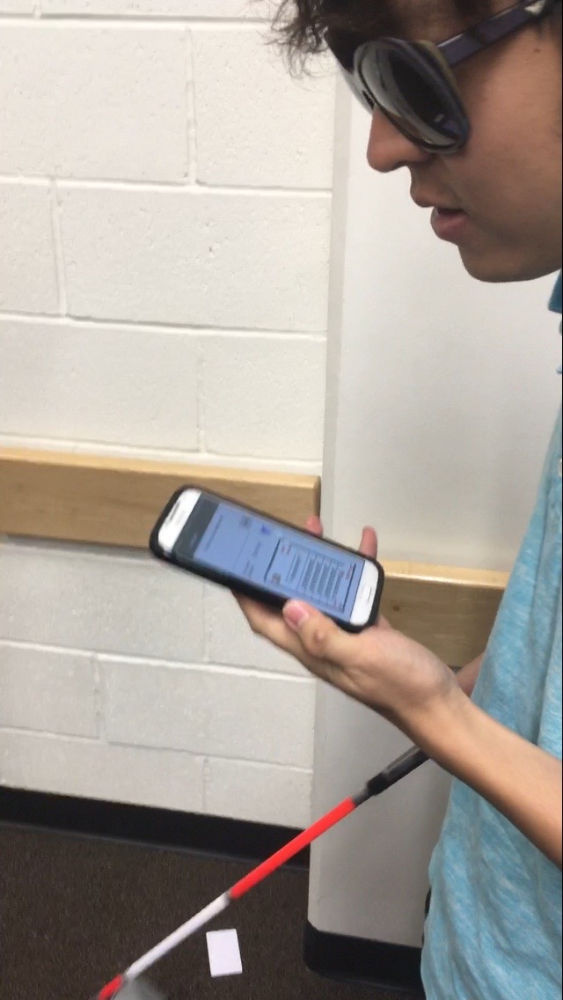
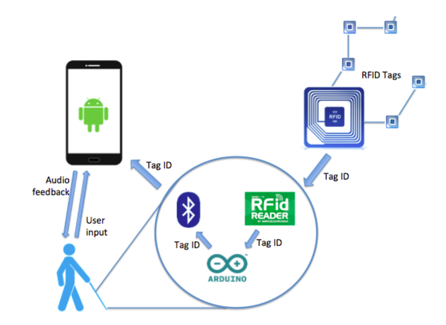
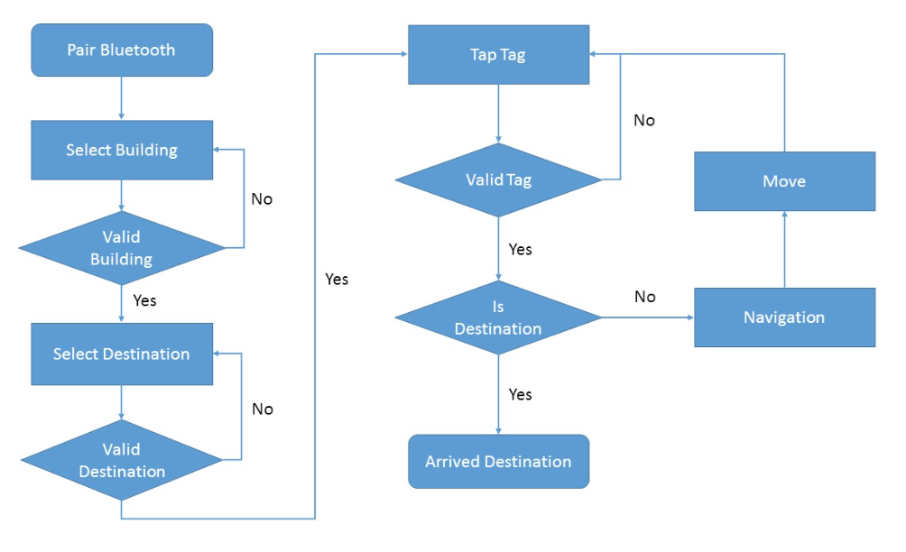
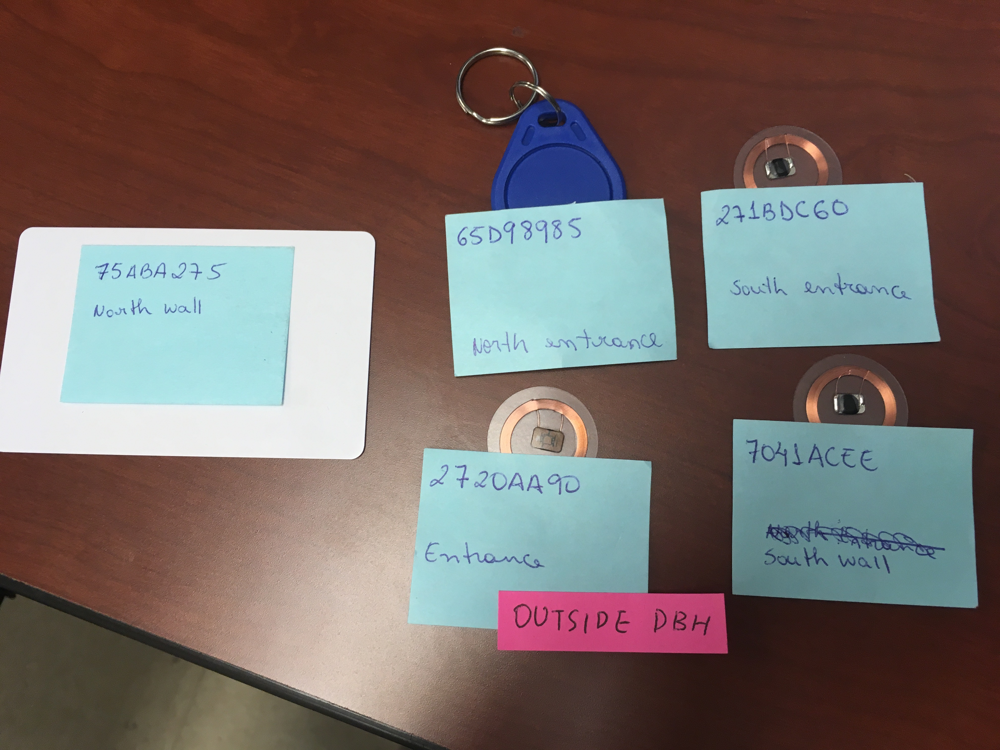
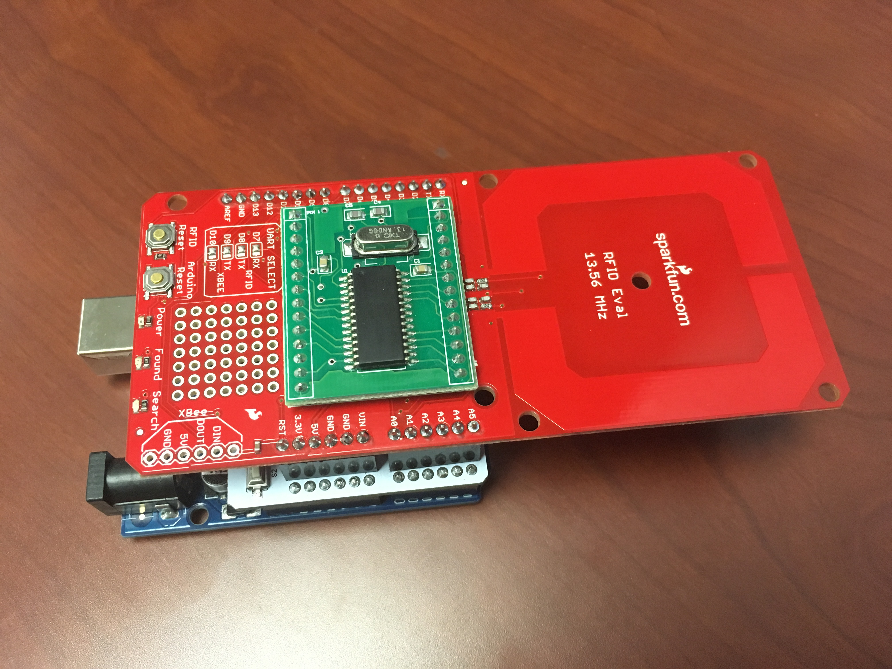
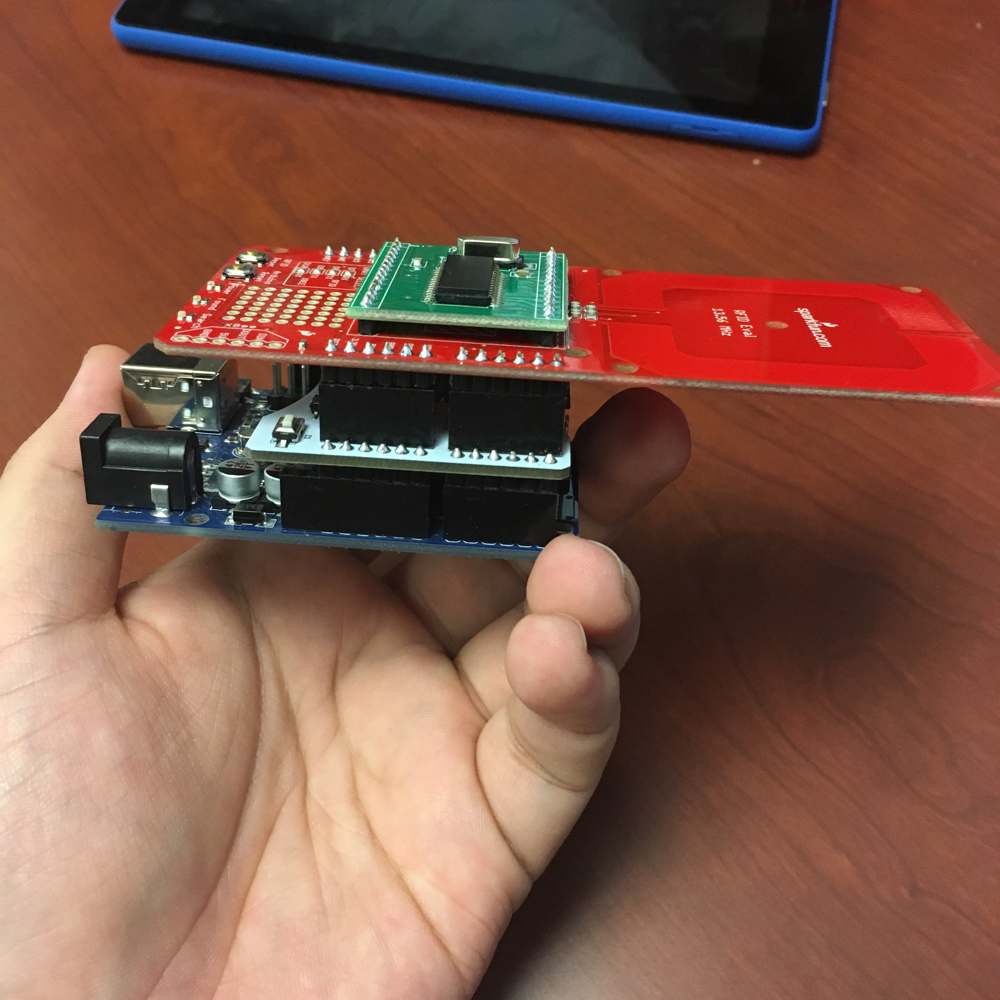
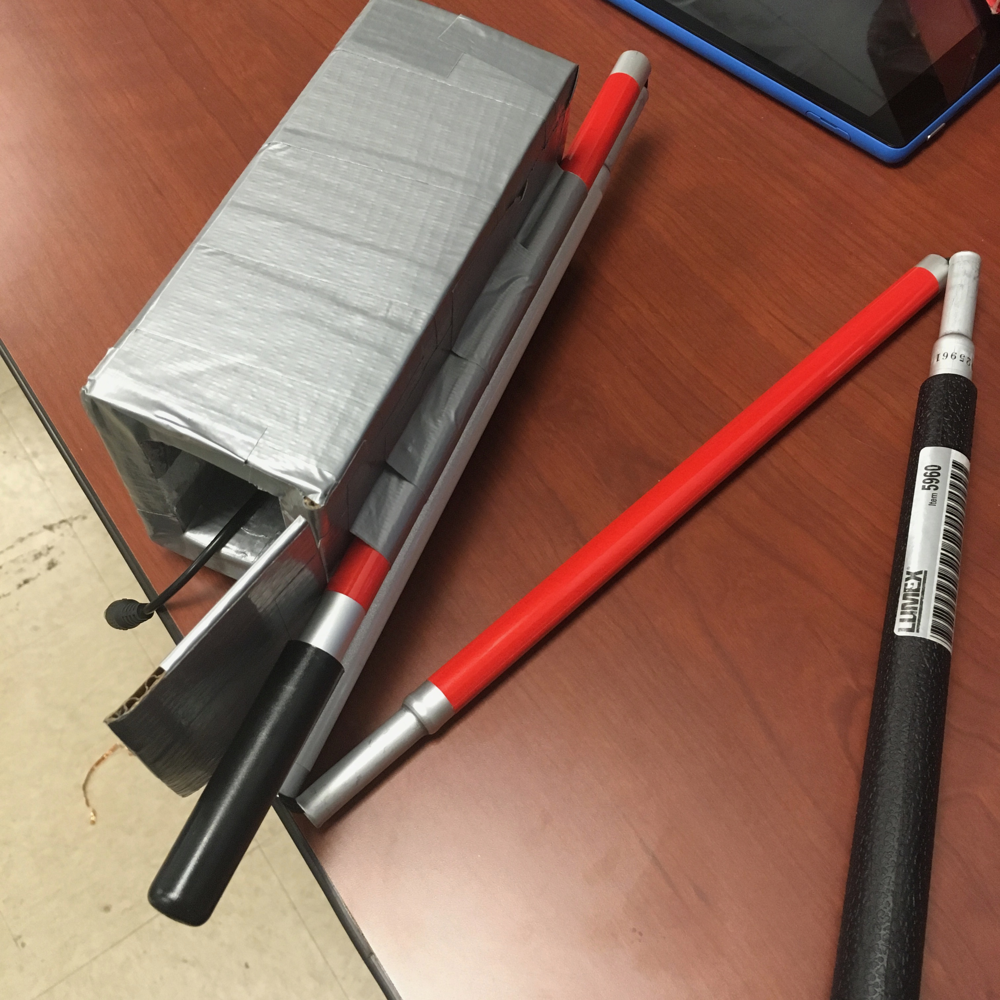
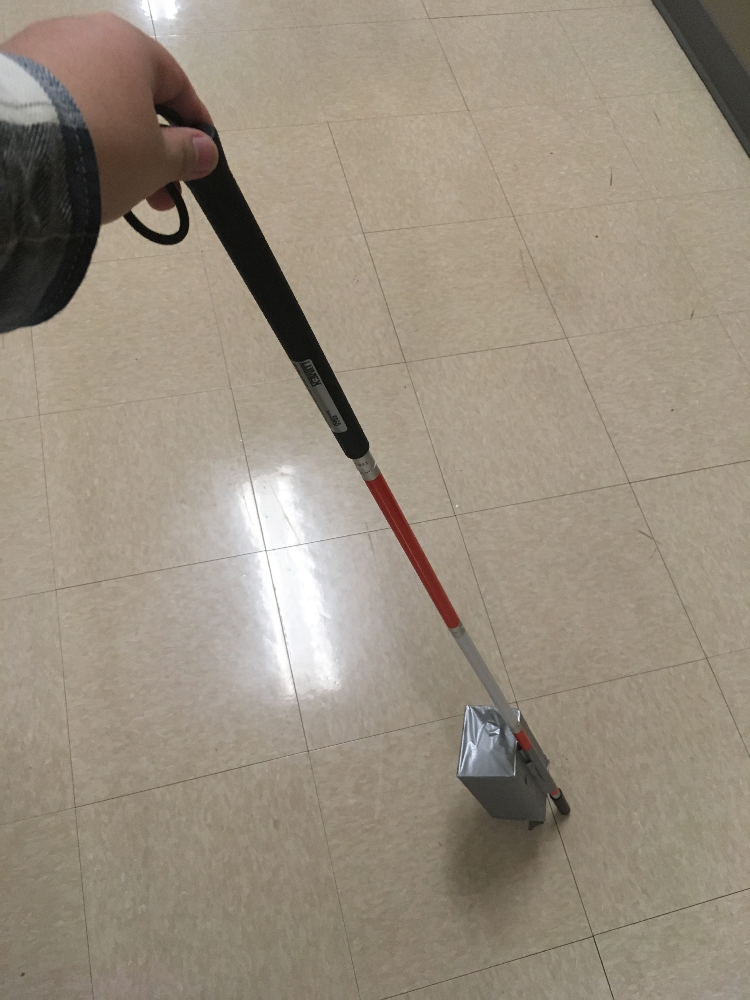

Course Project of INF 248 Intro to Ubiqutous Computing
Copyright is held by the owner/author(s).
Prototyping TalkingCane
For the course project of Intro to Ubicomp, I and my team designed and developed the prototype of TalkingCane, revisiting with its new name, NaviCane!

Photo taken by Jeseok Lee.
Teammate Ke Jing as a model.
Architecture and Logic Flowchart

Architecture of the design

Logic flowchart
Diagrams drawn by colleagues(Mayara Figueiredo, Kelly Kwan and Ke Jing).
Architechture shows a scheme of the three main components of the NaviCane system: the RFID tags mapping the paths, the navigation device in the user white cane, and the smartphone application with which the user interacts. The data that flows through the two first components is basically the RFID tag ID. The communication is one way only: the tag ID is sent from the RFID tag to the smartphone app and the system does not send any data back to the RFID tags.
The user interacts with the smartphone application through text input, while the application responds through audio feedback.
Logic flowchart shows the user navigation process. Starting at the top left in the flowchart, there is a set of setups. The user first pairs the smartphone with the NaviCane through Bluetooth. Then in the app, the user enters the building, which in our demo is DBH 1300. We used a room as the building in our prototype for convenience. After that, the user selects a destination, which in our demo is the front door of classroom 1300, which we labeled, "North Entrance." The middle and right side in the flowchart shows the main navigation loop. First the user taps a RFID tag, which in our demo is located in a corner in the back of classroom 1300. If this tag is valid then the program will check whether it is the tag at the destination or not. If it is not the destination then the program will give audio navigation instructions to the user. The user will, for example, turn right and walk 20 feet, to search for another tag. Through the step-by-step navigation with the RFID tag landmarks, the user can finally reach the destination.
Note that this flowchart is describing how the current prototype works. In the future, a website will be added to host the map and navigation data. Also the Bluetooth pairing may be automatic once the application is opened. The “Select Building” step could be aided by suggestions from GPS localization. the user input could be voice input instead of typing.
Parts



Photo taken by Jeseok Lee.
RFID tags in 13.56MHz frequency and RFID reader module built on Arduino.
(RFID shield and Bluetooth(BLE) shield stacked on Arduino)
RFID shield and BLE shield were stacked on the Arduino board. RFID Tags contain their own ID, which can be read with the RFID reader module. And RFID reader sends the ID information to the user's smartphone using Bluetooth communication. Instead of connecting pins, RFID shield and BLE shield were used to make compact structure of the design.


Photo taken by Jeseok Lee.
Attached the RFID reader module to a guidance cane. 9V Battery pack is planted inside the gray box.